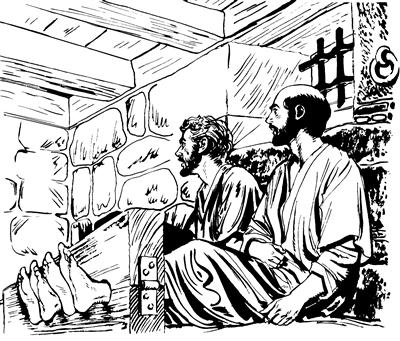

Paulusap Silasap ambatto tongolamdekpa, Timotius sinap nhon ma'aptaek (16:1-3)
16
1 Paulus palamogha as Derbea nen as Listra piog. Ae Listra anekoa palamogpa, nimi nhon Yesus yubu ka'ero ulamog nimi nhon si Timotius wamog. Timotius ilinna Yahudi kel, Yesusag seneraglamog kel wamogpa, Timotius ili ponekona Yunaninge wamog. 2 Yesusag “Sikne” aro seneragtop nimi as Listra wamek nimiap as Ikonium wamek nimiapti, “Timotius wana wali” alamek.3 Wene alameka Paulusti ka'ebaogti, “Timotius enero poa nhon pukap,” sembaog aghana, Yahudi nimi as enekoag wamek nimi tanekori, “Timotius neneko ili Yahudi sisa nimi komdi, Yunaninge wamla,” aro ni el wamek. Timotius ili Yunaninge wamogne sembe, Paulusti, “Timotius kon karebaikpa, nhon pukap,” seogpa, Timotius kon karebaek.a
Paulusti haing uamna kwelekamna senenag agha Makedonia nimi sembe lenda mabogha (16:4-12)
4 Paulus elkaboap as taneko ni kanero palamekti, Yerusalema Yesusti wepto pogsiognangap Yerusalem wamek nimi Yesusag seneragtop nimi wenehiropnangapti yubu tam karepto pibekne as taneko ambato poa tongolamsiekti, “Undo ul palamlulom,” aro ambarelamsiek. 5 Ambato poa tongolamsiekpa, Yesusag seneragtop nimi winil talamek nimi ka'elamekti, mikip uro Yesusag “Sikne” aro seneraglamekti, nimi maikno talamek. 6 Paulusap elkaboap palamekpa, Allah Eldamne Yame Walinge nenekori, “Asia so'oag wamang nimiag Yesus yubu ambatsiseng kom,” aro pat pibogpa, ina palamekne mog so'o Frigia Galatia so'oag piek. 7-8 Mog so'o Misia simbik palameka, “Mog so'o Bitinia pukap,” aro ulamek aghana, Yesus Eldamne Yame Walinge nenekori, “Bitinia peheng kom,” aro irikahiogpa, Misia so'o phiro as Troas piek. 9 Troas piekti, Paulus ae inipnag malamogti, haing uamna kwelekamna senenag agha lenda malamog abeneko pere nimi mog so'o Makedonia nimi nhon sekamogha tibog aog. Tibog aogpa, Makedoniange ponekori, “Mag alip toman kauro yamendi, nu Makedonia nimi yepsululam,” aro mololamogpa, lenda mabog. 10 Paulusti lenda undo mabogne sembe nu ambatsiogpa, tam kareplamuburi, “ ‘Makedonia nimiag pimundi, yubu walinge Yesus sembe ambarel phululom,’ aro Allahri ambato nu yoplamsil,” sembabu. “Allahri nun yoplamsil,” aro seneraglamuburi, “Elem-elem mog so'o Makedonia pukap,” aro togna toglamubu.b 11-12 Togna togto aburi, Troas laplobi agha kabong lomag agha palamubunge peket aro as sina Samotrake pina mabubu. Mabubua kwelekaogpa, Neapolis inagha as Filipi pibu. As Filipi as nubunge neneko Makedonia so'oag agha Roma nimiri samenag nimi taneko luknubahiekti, Roma nimiri ul palamekne sunsunum uro saelbamsiek.c As Filipi anekoa sae a'iliro wamubu.
Paulusti Filipi nimi Allah yubu ambatsiogha (16:13-15)
13-14 As Filipi wamuburi, Yahudi nimiri Allahag yubu lerop sum taogpa, “Yahudi nimiri mag abolag winil dalamangdi, Allahag molona mololamang, to,” arod el pukap sembabu. El pukap sembaburi, as Filipi leka kanero solingkirobag ina siram lambaburi, mag abolag palamububa, kelabo longoro wamekag piburi, pukubu. Pukamububa, kel nhon si Lidia as Tiatira kel wamog. Wamog kel enekori ag walinge nimi nubunge tupne sembee wirop ag uwong-uwonga likto ulamogti, kel eneko Yahudi kel kom aghana Allah omektop kel wamog. Elap kelabo tanekoap yubu saro wamubu. Yubu saro wamububa, Lidia kelenekori babe yubu ambatsibunge ka'eamsiog. Paulusti Yesus sembe yubu ambarelamsiog abeneko Nuni Allahri keleneko wana heklamogpa, Yesusag “Sikne,” aro seneraghogti, yubu ene saelbamog. 15 “Yubu ene sik,” sembaogti, saelbamogpa, kelenekoap eldi aeag wamek nimiap ni maghag pelengkahibu. Maghag pelengkahibuba, Lydia kelenekori nunag ambarelamsiogti, “Nia Mangkina Salehiropne Yesusag ‘Sikne’ aro seneraglamna. A'undi na sembe, ‘Kel eneri sik uro Yesusag seneraglamla,’ sembamun, tanena nanap nhon wamukap,” aro yubu mikip uro enero eldi aeag tobongkipsiog.
Kop ae sembe usog wamogne Filipinge Allah yubu ka'ebaogha (16:16-40)
16-17 As Filipi wamubuag agha kel nhon el kulomag phia wamog kel wamog. Kel enekona, amik uro yabinepne ililamog kel, ili yabo arukna saog uro wamog. Wamogpa, nimiri kel enekoag yalamekpa, kel enekori, “Anag undo uro yabilul,” aro ambarelamsiogpa, el talamekti, kamna ili yabo tarelamsiekpa, ili yabo tup talamek. Ik nhon sum, “Yahudi nimiri mag abolag Allahag molona molorobag pukap,” aro palamububa, keleneko haiptaburi, nu Paulusap amik sare nelepto yalamogti, haum aro lelamogti, “Nimi tane Allah Mikip Phelektopne arukna wamang ane sembe, sindi yubu ambarelamsiangne ka'elapmunba, Allahri a'un taulbahilul,” aro yubu leple yalamog. 18 Undo yubu wene alamogha ane, nu pang-yang ulamububa, yubu wene alamog aneko sae a'ilin talamog. Ik nhon sum, yubu wene alamogha aneko sembe Paulusti wanaag yo uaogpa, samoro keleneko kembaogti, phia keleneko kulomag wamogha anekoag yubu lelamogti, “Allahri ‘Saelbamsululam,’ aro wepto poghol aogne Yesusti el mikipne nunag pipsiogpa, lemnuan. Phia kelene kulomag wamlama ane lambae!” seog.
Wene seogpa, phia keleneko kulomag wamogha aneko lambaog. 19 Phia aneko kelenekoag wamogne neneko lambaogpa, ili yabo tanekori, “Phia aneko el kulomag ulamlari, ‘Undo-undo uro yabilul,’ alamlaba, kal ma'al maikno tarelamsiang aneko wene nen saelbaukap kom,” aro Paulusap Silasap sae salero, tam lelekto kemero kareptobag saelba uahirop nangag poa phiek. 20-21 Keleneko ili yabori tam lelekto kemero kareptobag poa phiekti, saelba uahirop nangag lolorop yubu ambarelamsiekti, “Sin Yahudi nimi taneri ambarelamsirangne nene, ‘Ulamlulom,’ alamdang aghana, nu mog so'o Roma nimi wamapti, ambarelamsirangne sunsunum uro uanep kom wamap. Nu as Filipi nimi Roma nimi umag wamapne wana mali nenelamsirangba, nimi taneri yanghang alamsiang,” aro lolorop yubu ambatsiek.f
22 Wene aro ambatsiekpa, nimi maikno tanekori Paulusap Silasap sembe “Karong” alamsiekpa, nimi nubunang tanekori sikinipsabo saeag nembahiekti, “Sikininge ag enekto amtangne taepto epsimundi, nimi abene kameri opsululom,” aro ambatsiek.
23 Wene aro ambatsiekpa, kameri maiknoro opsiekti, kop aeag tolongkahiekti, kop ae yae uropne ponekoag, “Lambarikagtina, wali uro yae wamsululam,” aro ambarek.
24 Wene aro ambarekpa, kop ae yae ua uropne ponekori sin phende abeneko ae kolo lom nusamagneag nembahiogti, sindi yan kalag a'aruro kauplopsiog.

25 Yan kalag a'aruro kauplopsiogpa, wamekpa, ae inipna tomnusam taogpa, Paulusap Silasap abenekori Allahag molona mololamdek. Allahag molona mololamdekti, Allah omektop sepna seplamdekne nimi yogne kop aeag aneko wamekneri babe ka'eamsiek.26 Allah omektop sepna seplamdekpa, ka'ebaekti, wamekpa, ae sa'uma nubunge nhon ulamog. Ae sa'uma ulamogti, ae eneko solamekti, yangkaek kirik maptopne pot-porolamog. Yangan kirik maptopne pot-porolamogpa, ina siram kuptangto palamogpa, kop aeag tobongkamsiek nimi yan sae haing kaubamsiekne loptangto palamog.27 Ae sa'uma aneko ulamog abeneko kop ae yae ua uropne poneko malamogha pukog. Pukogti, kemelamogpa, ina serekna serekahiogne taneko ni kupto wamogha kembaogti, “Nimi ni tobongkahiongne lambang,” aro log sembaog. Log sembaogti, karog kilbaogti, “Ya'ag optanun,” aro ulamog.g28 “Optanun,” aro ulamogpa, Paulusti, yubu nubu uro lelamogti, “Optaheng kom. Nuna ni ae lomag ane wamap,” seog.
Paulusap Silasap kop aeag tobongkahiekpa, sin phende abenekori yanap kalap a'aruro kauplopsiog. (ACT 16.25)
29 Undo wene seogpa, kop ae yae ua uropne ponekori, “Whea tarelanuhu,” aro ilipsabo arukahiogti, ae lom enekoag wa'iogti, pet-pet aro Paulusap Silasap sin whingag yabu sanukto pulingkiog. 30 Yabu sanukto sin whingag pulingkiogti, sekom agha Paulusap Silasap enero poa asag lambahiogti, hailamsiogti, “Nani yabo, malia ulamnange sembe, ‘Allahri lunuro opneleag,’ aro na huaneba taulbanelul?” aro haibahiog. 31 “Na huaneba, taulbanelul,” aro haibahiogpa, sindi samoro elag lelamdekti, “Nia mangkina Salehiropne Yesus ponekoag ‘Sikne’ aro seneraglapmunba, anap ankabo andi aeag wamangneap taulbahilul,” aro ambatek.
32 Wene aro ambatekti, elap ilipsabo eldi aeag wamekneap Nia Mangkina Salehiropne Yesus sembe yubu ambarelamsirek. 33 Ambarelamsirekpa, kop ae yae wamogne ponekori inipnag abeneko sin phende opsiek ina taneko mag a'elbahiog. Mag a'elbahiogpa, eldi kelabo me wamekneap eldi aeag wamekneapti Yesusag seneraglamekne sembe maghag pelengkipsirek. 34 Maghag pelengkipsirekpa, Paulusap Silasap abeneko enero poa kop ae yae wamogne ponekori aeag poa phiogti, kwaneng yobatsiog. Yobatsiogpa, teekti, wamekti, elap ilipsabo aeag wamekneapti, “Allah yubu ambatsirangba, sik senelamapti, salelamap,” aro awi yeng senelamek.
35 Kweleknag aneko as Filipi aneko nimi saelba uahiropnangdi sikinipsabo poglamsiekti, “Kop aeag nimi yae ua uropne ponekoag pimundi, ambarelapmundi, ‘Nimi phende nang abeneko sae lopsululam,’ aro ambatlulom,” aro pogsiek. 36 Pogsiekpa piekti, ambarekpa, kop ae yae wamogne ponekori nen sap tipto Paulus ambarelamogti, “Nangkabo, nimi saelba uahirop nimi tanekori nanag, ‘Sae lopsimenba, yubu lepseng koma lambarukang,’ seangba, wali lambarurom,” aro ambatsiog.
37 Wene aro ambatsiogpa, Paulus nenekori saelba uahirop nang sikinipsabo yaek nimi tanekoag, “Nu babe Roma nimi wamnam aghana, tam oroghag agha sa'a sembe tam lelekto kemero kareptop nimiri nunag haibahin koma nimi maikno haingag agha opsiongdi, kop aeag tolongkipsiong? Opsiongdi, tolongkipsiong aghana, wene sa'a sembe tognoro saog uro ‘Pururom,’ seang? Nu tognoro saog uro lambanunam kom. Sindam nimi yaikti, nu enero poa lambitsukang,” seog.h 38 Paulusti, wene aro ambatsiogne sindi yubu poro agha sikini yaboag piekti, yubu tipto ambatsiek. Ambatsiekpa, ka'ebaekti, as taneko nimi saelba uahiropnangdi, “Paulusap Silasap, sin babe Roma nimi wamdang, aghana tam lelekto kemban koma sin opsibo,” aro el taekti, log sembaek. 39 Log sembaekti, as Filipi saelba uahirop nimi nubu nang taneko Paulusap Silasap sin wamdekag piekti, “Wana aingniro lambarukang,” aro yubu wali uro lelamekti, ae kop aeag anekoa enero poa lambahiekti, “Nangkabo, as eneag laplobi agha lambarurom,” seek.
40 Wene aro ambatsiekpa, sin phende kop aeag agha lambarekti, kel Lidia kelenekori aeag pirek. Pirekti, sikin kabo Yesusag “Sikne” aro seneragtop nimi wana aingnibahirekti, Paulus elkabo abenekoap as Filipi aneko laplobi agha palamek.